目前 WireGuard 还只有个 Android 版的官方客户端，而 Windows 和 Android(另一个) 以及 IOS 客户端都是由第三方(TunSafe)制作(开源)的。至于 Mac 和 Linux 都还没有可视化的程序，只能命令行方式使用。
因为我只有 Windows 和 Android 设备，所以本教程为：Windows Android 客户端简单使用教程。
IOS 官方版客户端(TestFlight 测试中)：https://testflight.apple.com/join/63I19SDT
IOS TunSafe版客户端(TestFlight 测试中)：https://testflight.apple.com/join/9gbYAJLB
服务端手动教程：一个高速、安全、可以复活被墙IP的VPN —— WireGuard 服务端手动教程
TunSafe 提供的免费 WireGuard 账号：https://tunsafe.com/vpn
打开网页后选择你想要的服务器地区，然后点击绿色的 [Generate and Download] 按钮下载配置文件，导入客户端即可，手机客户端可以扫描二维码(点击下载按钮后显示)。
Windows TunSafe版客户端
Windows TunSafe版客户端国内外分流教程：WireGuard —— Windows 客户端国内外IP分流教程
下载
点击展开 查看更多
下载稳定版安装包：https://tunsafe.com/downloads/TunSafe-1.4.exe
下载测试版安装包：https://tunsafe.com/downloads/TunSafe-1.5-rc1.exe
测试版相比稳定版修复了一些问题、新增了一些功能，但是没有经过大量稳定测试，有兴趣可以尝试下。
随着时间的变化，以上下载链接可能不再是最新版本，所以可能需要去官方下载页面 下载（第一个或第二个绿色按钮 Download TunSafe X.X Installer）。
这个客户端也有绿色版，去上面的官方下载页面根据你的系统位数选择下载压缩包：
- TunSafe X.X Standalone Zip for 64-bit systems (x64, Windows 7 or later, 206 kB)
- TunSafe X.X Standalone Zip for 32-bit systems (x86, Windows 7 or later, 177 kB)
当然绿色版就需要你手动安装 TAP 虚拟网卡了：
- Standalone TunSafe-TAP Installer 9.21.2 (Windows 7 or later, 178 kB)
安装
点击展开 查看更多
下载后，右键 [以管理员方式运行] 安装程序，然后如下图所示开始安装：
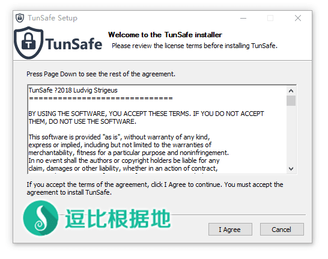
上图是使用条款，直接点击 [I Agree] 按钮继续。
下图是选择要安装的程序，客户端自身 和 TAP虚拟网卡程序，默认全部勾选，点击 [Next >] 按钮继续。
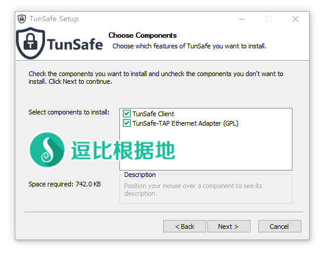
下图，选择安装目录后，点击 [Install] 按钮开始安装。
然后等待安装完成，安装过程中可能会因为涉及到安装虚拟网卡，系统会提示你要安装设备软件，记得勾选左下角的 [信任xxx....] ，然后点击 [安装] 按钮。
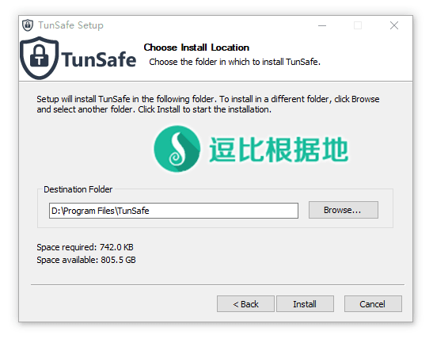
使用
点击展开 查看更多
安装完成后，会直接启动软件，软件整体如下图所示。
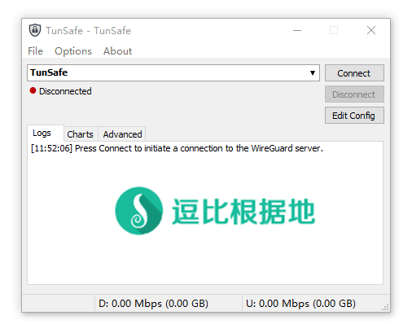
我们点击 File - Import File 选项，就会提示你选择客户端配置文件(如下多个图演示)。
当然你也可以点击 File - Browse in Explorer 选项，会直接打开该VPN客户端的客户端配置文件存放目录，你将你的客户端配置文件(xx.conf)复制过去就行了。
注意：配置文件名即为VPN客户端服务器列表中显示的名称，例如 client.conf 显示为 client ，可以自己修改。
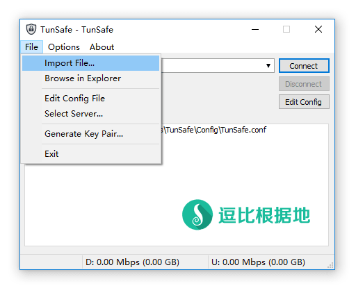
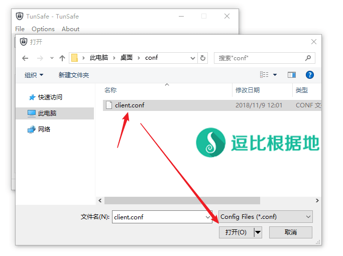
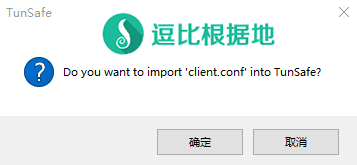
添加完后，我们选择 client 这个我们刚刚添加的VPN客户端配置，然后点击右侧的 [Connect] 按钮(下图是点击后的，所以按钮变成了 [Reconnect] ，即重新链接)。[Disconnect] 按钮代表停止链接。
该软件的托盘菜单中也有 [Connect]、[Reconnect]、[Disconnect] 选项。
点击右侧的 [Edit Config] 按钮即可编辑当前配置文件。
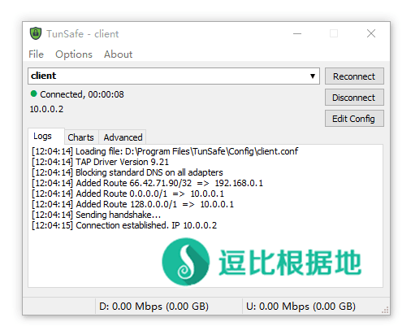
另外，软件 Options - Service Mode 中的选项分别对应的是：
- Don’t Use a Service - 不使用服务
- Foreground Mode (Close connection when closing TunSafe) - 前台模式（关闭TunSafe时关闭连接）
- Background Mode (Stay connected when closing TunSafe) - 后台模式（关闭TunSafe时保持连接状态）
- Resume Connection when Windows Starts - Windows启动时自动连接
- Minimize to Tray when Windows Starts - Windows启动时最小化到托盘
Android 官方版客户端
点击展开 查看更多
下载安装
Google Play地址：https://play.google.com/store/apps/details?id=com.wireguard.android
逗比云地址：./softs.wtf/?dir=科学上网/Android/WireGuard
使用方法
打开客户端后，一片空白，我们点击右下角的 [+加号蓝色] 按钮，可以看出弹出几个添加配置的选项，分别是：
- 选择客户端配置文件
- 扫描二维码
- 创建文件
推荐前两种。
第一种就是将客户端配置文件传到手机上，然后选择配置文件就行了（配置文件名不要包含中文）。
第二种即你去找个生成二维码图片的网站，复制你的客户端配置文件内容去这些网站将其生成为二维码，然后手机扫描二维码即可添加成功，添加时会提示你要给该配置文件起个名字。
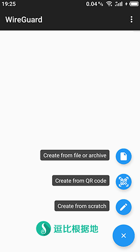
下图的 ubuntu14.04 配置选项就是我添加的，点击配置名称即可看到配置详情，而点击配置名称右侧的 [开关] 选项，即可链接该服务器。
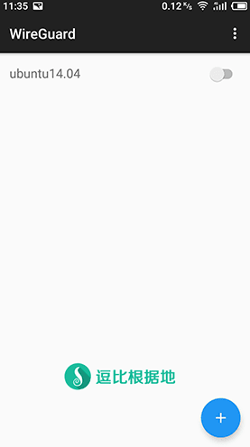
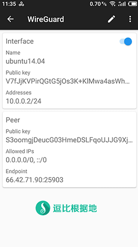
配置不走VPN的应用
我们点击配置名称看到配置详情后，点击右上角的 [铅笔] 按钮，即可修改配置信息，其中有个 [0 EXCLUDED APPLICATIONS] 选项，点击后就可以 勾选 不走VPN的应用。
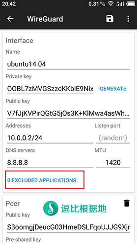
Android TunSafe版客户端
点击展开 查看更多
相比官方版客户端，TunSafe 版只是自带了30天免费的服务器账号(1天1GB)，所以你觉得哪个好用就用哪个。
下载安装
Google Play地址：https://play.google.com/store/apps/details?id=com.tunsafe.app
逗比云地址：./softs.wtf/?dir=科学上网/Android/TunSafe VPN
使用方法
打开客户端后，可以看到如下界面，我们点击右上角的 [三点] 按钮可以看到如下几个选项，分别是：
- 配置文件列表
- 配置不走VPN的应用
- 客户端设置
我们点击第一个选项 [Config Files]，进入配置文件列表页面。
注意：第二个选项，进去后勾选想要不走VPN的应用即可，我就不截图了。
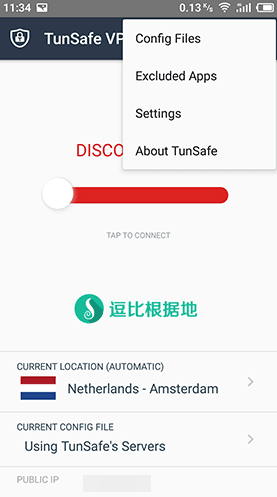
我们可以看到这里和 WireGuard Android官方版客户端一样。
我们点击右下角的 [+加号蓝色] 按钮，可以看出弹出几个添加配置的选项，分别是：
- 选择客户端配置文件
- 扫描二维码
- 创建文件
推荐前两种。
第一种就是将客户端配置文件传到手机上，然后选择配置文件就行了（配置文件名不要包含中文）。
第二种即你去找个生成二维码图片的网站，复制你的客户端配置文件内容去这些网站将其生成为二维码，然后手机扫描二维码即可添加成功，添加时会提示你要给该配置文件起个名字。
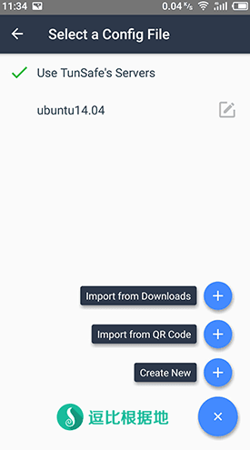
添加完成后，点击勾选你要使用的 配置名称，然后回到该客户端软件首页。
点击中间的 大红条 ，即可连接至当前选中的服务器。
然后 大红条 就变成 大绿条 了，并且下面的公网IP也变为服务器IP了。
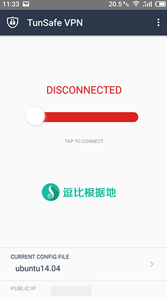
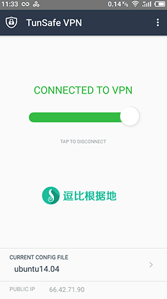
设置页面
最后就是设置页面了，下图中的选项分别对应：
- 互联网禁用开关
当 TunSafe 断开连接时，禁用所有的互联网访问。
- TunSafe 启动时连接
启动 TunSafe 时，自动连接上次使用的VPN服务器。
- 开机时自动启动
设备开机后，自动连接上次使用的VPN服务器。
- 允许本地网络流量
不将专用网络（例如192.168.x.x）路由通过VPN隧道。
- 显示Ping延迟
服务器列表显示延迟(表示没看到)。
- 显示公网IP
服务器列表显示公网IP(表示没看到)。
- 显示前台通知
当TunSafe处于活动状态时，显示带有统计信息的通知。
不懂保持默认就行。
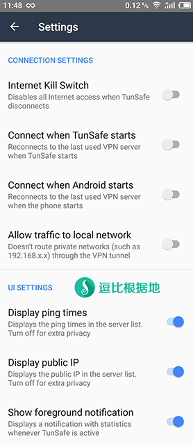
客户端到这里基本就介绍完了，有什么需要补充的记得告诉我。
转载请超链接注明：逗比根据地 » WireGuard —— Windows/Android 客户端简单使用教程
责任声明：本站一切资源仅用作交流学习，请勿用作商业或违法行为！如造成任何后果，本站概不负责！